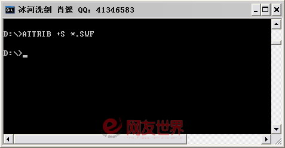
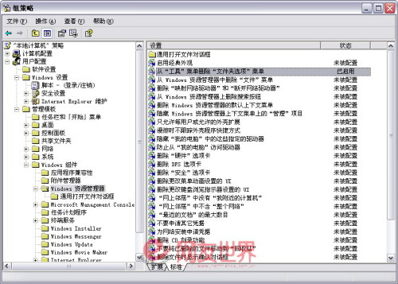

2007年12月25日 星期二 07:11 P.M.
隐藏秘密文件
- 下载了几个小Flash游戏在电脑中，本来将文件隐藏了，可是别人在文件夹选项中取消了隐藏状态後，秘密就暴露了，看来得用些高级的伪装法了。
在“运行”栏中执行“cmd”命令，打开提示符窗口。进入Flash游戏所在的文件夹中，输入命令：“attrib +s *.swf”（如图1）。命令执行後，所有的Flash游戏便加上了系统文件属性。再进入“C:\Windows和C:\Windows\system、C:\Windows\system32”几个文件夹中，分别执行“attrib -s *.*”命令，取消所有文件的系统属性。

http://soft.yesky.com/imagelist/06/26/p91fvw9s93gw.jpg
- 打开资源管理器，点击菜单“工具→文件夹选项”，选择“查看”标签，在中间列表中选择“隐藏受保护的系统文件”项目。需要注意的是，这里要同时选择“显示所有文件和文件夹”项。按“确定”後，在资源管理器中就看不到我的游戏了，但是设置隐藏属性的文件和原来系统目录中的文件却是可以看见的，这样一般人便不会疑心文件夹中有文件被隐藏了。
- 同时，为了保证别人不乱修改文件夹显示设置，还要将资源管理器的文件夹选项隐藏起来。在“运行”栏中执行“gpedit.msc”命令，打开组策略工具，依次展开“本地计算机策略→用户配置→管理模板→Windows组件→Windows资源管理器”。接着转到右侧窗口，选择“从工具‘菜单’删除‘文件夹选项’菜单”，将其状态设置为“已启用”（如图2）。关闭组策略後，“文件夹选项”设置菜单也随之失效了。

http://soft.yesky.com/imagelist/06/26/834w8t9zyn4e.s.jpg